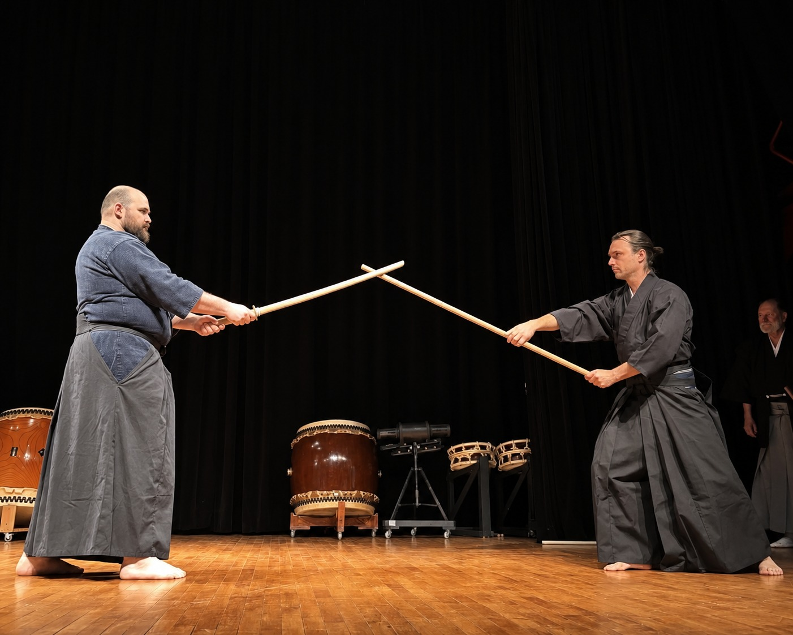

Jōdō is a Japanese martial art that brings together the wooden staff, or jō, and the sword. Behind the simplicity of these weapons lies training that develops precise movement, physical readiness and awareness of a partner.
At Sandokai, we study the jōdō of Shindō Musō Ryū, continuing the teaching of Kaminoda Tsunemori sensei as passed on by Daniel Pearson sensei.
Teaching and supervision
Daniel Pearson, Menkyo Kaiden
Instructors
Felix-Léon Dupuis, Go Mokuroku Marc-André Hernandez, Sho Mokuroku
01 /
A partner training
Training is based on set forms, or kata, taught through training with a partner: one uses the staff, the other a wooden sword. Both roles offer an opportunity to explore distance, rhythm and the right moment to act.
Through repetition, students gradually refine their footwork, posture and coordination. They also learn to read their partner’s intentions and respond accurately, without rushing or using excessive force.
Beyond technical execution, jōdō cultivates awareness, control and cooperation. Each partner contributes to the other’s progress.

Performing a jōdō kata02 /
Shindō Musō Ryū
Founded by Musō Gonnosuke in the early seventeenth century, Shindō Musō Ryū is a Japanese martial tradition passed down from one generation to the next.
The staff is a versatile weapon, combining strikes, sweeping movements and thrusts. Studying the fundamentals prepares students for the traditional kata, whose depth becomes apparent through continued training.
Learning goes beyond memorising movements. Training and reflection deepen students’ understanding of the underlying principles and their possibilities, while preserving the teaching they have received.
Jōdō can be studied as a primary discipline or alongside iaidō. Working with a partner provides direct experience of distance and interaction, enriching the understanding of both arts.
Get in touch
Train in Montreal
Proto Studio, in Montreal’s Mile End neighbourhood.
5333 avenue Casgrain, Suite 1107 Montréal, QC H2T 1X3